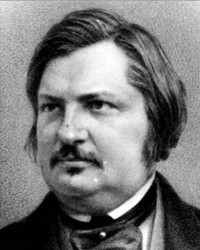

Оноре де Бальзак
Роки життя:1799−1850
Читати:
«Гобсeк» (скорочено)
Оноре де Бальзак, знаменитий французький письменник, народився 8 (20) травня 1799 року в Турі, помер 6 (18) серпня 1850року в Парижі. Його життя - це історія трудівника, який невтомно прагне йти вперед, завойовувати собі славу й багатство. Батько письменника був селянином. Закінчивши школу, Оноре працював писарем, а потім канцеляристом при королівській раді Людовіка XVI; тоді він і надав своєму прізвищу Бальса більш аристократичного звучання, переробивши його на Бальзак. Раннє дитинство Оноре минуло поза батьківською домівкою. Спочатку він жив у годівниці, простої туринської селянки. Тут, у маленькому селі неподалік від Тура, вперше відкрилася перед ним краса рідного краю. У чотири роки його віддали до пансіону Леге. Одинадцять років дитинства й отроцтва провів він у пансіонах та інтернатах. Найпохмурішими були для нього сім років перебування у Вандському колежі, закритому навчальному закладі, під керівництвом монахів-ораторіанців, де вихованці змушені були підкорятися суворому монастирському режиму. За найменшу провину їх шмагали і садили до карцеру. Бальзак мав мало друзів і вважався похмурим і несумлінним учнем. У ці роки болісної дитячої самотності Бальзак залучився до світу книжок. Він читав усе, що було в бібліотеці колежу, намагався сам писати, але це викликало лише сміху товаришів. Перебування в колежі скінчилося серйозним нервовим захворюванням, і батьки ненадовго забирають його додому. Коли хлопцеві виповнилося п'ятнадцять років, його батька переводять по службі до Парижа. Батько майбутнього письменника хотів бачити свого сина поважним нотаріусом або відомим адвокатом. Він наполіг, щоб Оноре вступив у Школу права (1816). Одночасно юнак працює писарем у конторі адвоката Пльионеде Мервіля, котрий пізніше з'явиться на сторінках "Людської комедії" під ім'ям Дервіля. Роки, що їх Оноре провів у конторі, а потім у нотаріуса Пассе, помітно розширили його світогляд. Тут Бальзак осягнув ті приховані пружини, знанням яких згодом він так вражатиме своїх читачів. У цей час таємно від батьків юнак відвідує лекції з літератури у Сорбоні. У 1819 році він склав випускні іспити й успішно закінчив Школу права. Тепер перед ним відкрилася кар'єра нотаріуса, адвоката. Але несподівано для батьків Бальзак заявляє про своє тверде рішення стати літератором. Ні батькові погрози і прокляття, ні материні благання і сльози не змогли зламати волі двадцятирічного юнака. Тоді на сімейній раді вирішили дати синові два роки випробувального строку, упродовж якого він мав виявити свій талант. Юнак успадкував світогляд свого батька, його здоров'я і залізну волю. Він залишився в столиці, і був у захопленні від почуття повної свободи (батько виїхав з родиною в провінцію), попри те, що родина позбавила його підтримки. Як свідчать його листи до сестри Лаури, це не заважало йому бути сповненим енергії і честолюбних задумів. У своїй убогій кімнатці він мріяв про славу й багатство, про те, що завоює це велике місто Париж.
Трагедія "Кромвель" - перша літературна спроба Бальзака - була невдалою. Згодом він пише під псевдонімом низку романів, що не мали літературного значення. Іноді Оноре живе у батьків у Вільпаризі. Там він познайомився з Лаурою де Берні. Це була немолода, сорокарічна жінка, мати шістьох дітей, дуже нещаслива у своєму сімейному житті. Це стало першим коханням Бальзака. Лаура відіграла велику роль у його житті, зі співчуттям поставилася до мрій і планів молодого письменника, підбадьорювала, підтримувала в тяжкі хвилини до самої своєї смерті (померла в 1836 році). У той же час у ньому прокидається прожектер і підприємець. Бальзак перший впроваджує однотомні видання класиків і випускає (1825-1826) зі своїми примітками Мольєра і Лафонтена. Але видання його не мали успіху. Ще сумніше закінчилася поїздка Бальзака в Сардинію, де він мріяв відкрити срібло, залишене там давніми римлянами в розроблюваних ними копальнях. У результаті всіх цих підприємств Бальзак опинився в боргах, що спонукало його до завзятої літературної роботи. Він пише повісті, брошури з різних питань, співпрацює в журналах "Карикатура" і "Силует".
Популярність Бальзака починається появою 1829 року роману "Останній Шуань, або Бретань у 1800 році". Він сподобався читачам, хоча критика зустріла його стримано. З цього моменту Бальзак майже не сходить зі шляху, на який він став. Один за одним з'являються його романи, в яких він всебічно змальовує французьке життя, виводить нескінченну низку найрізноманітніших типів. Він працював, як письменник-ремісник по 15-18 годин на добу. Він не чекає натхнення, сідає за стіл після півночі майже не залишає пера до шести годин наступного вечора, перериваючи роботу тільки для ванни, сніданку, а особливо для кави, якою підтримує в собі енергію і яку сам ретельно готує і вживає у величезній кількості.
Романи "Шагренева шкіра", "Євгенія Гранде", що з'явилися на початку 30-х років, в період великого творчого підйому принесли письменникові величезну славу, відкрили, перед ним двері не тільки літературних,: але й світських салонів, де його досі не приймали як рівного; він був допущений як модна знаменитість, і йому не раз це давали зрозуміти. Письменник познайомився тоді з багатьма майбутніми персонажами своєї "Людської комедії". Тепер більше не доводиться бігати за видавцями. Однак він не зміг здійснити мрію про багатство попри те, що так багато писав. Він видає по кілька романів на рік, серед них відомі "Сільський лікар", "У пошуках абсолюту", "Батько Горіо", "Втрачені ілюзії", "Сільський священик", "Господарство холостяка", "Селяни", "Кузен Понс", "Кузина Бетта".
У 1832 році Бальзак одержав листа зі штемпелем "Одеса" від невідомої польської аристократки Ганської, уродженої графині Ржевуської. Між романістом і шанувальницею його таланту виникло листування; він згодом кілька разів зустрічав її, між іншим, у Петербурзі, куди він приїжджав у 1840 році. Коли Ганська овдовіла, вона пристала на пропозицію вийти заміж за Бальзака, але ще впродовж кількох років з різних причин не могло відбутися їхнє весілля. (Бальзак ретельно готував квартиру для себе й дружини, а коли, нарешті, у березні 1850 року весілля відбулося в Бердичеві, смерть уже чатувала на нього, і Бальзаку лише кілька місяців залишилося тішитися сімейним щастям і безбідним існування).
1833 рік був роком початку великого творчого подвигу письменника, його титанічної письменницької праці. Він відійшов від світського життя і повністю поринув у роботу. Бальзак повертається до думки, що виникла в нього ще під час роботи над "Шагреневою шкірою", об'єднати свої твори в один величезний цикл, щоб був би підпорядкований єдиному задуму. Першим кроком на шляху до здійснення цього задуму було почате в 1833 році видання "Етюдів про звичаї XIX століття", які складались із сцен приватного провінційного і паризького життя - таким чином "Людська комедія" поступово набувала контурів. Вплив духу епохи науки ні в чому так не позначився на Бальзакові, як у його спробі з'єднати в одне ціле свої романи. Він зібрав усі видані романи, приєднав до них ряд нових, об'єднав їх спільними героями, окремих героїв зв'язав родинними, дружніми й іншими зв'язками і в такий спосіб, створив, але не довів до кінця грандіозну епопею, яку назвав "Людська комедія" і яка мала стати науково-художнім матеріалом для вивчення психології сучасного для письменника суспільства.
На початку 30-х років складається той гарячковий, напружений темп роботи, що, власне, був характерний для Бальзака протягом багатьох років. Перший том "Людської комедії" вийшов у 1842 році, окрім нього,- ще низка повістей, роман "Втрачені ілюзії" та інші твори. Але все частіше він скаржиться на біль у серці, сильні головні болі. Фізичні й творчі сили його згасали. Шлюб з Ганською, яку він ідеалізував силою своєї багатої уяви, здавався йому тоді єдиним порятунком. Після одруження він знову сповнився райдужних сподівань на майбутнє. Однак його мріям не судилося здійснитися. Близько двох місяців бореться Бальзак зі смертю. Вісімнадцятого серпня його відвідав Віктор Гюго. Того ж вечора Оноре Бальзак помер.